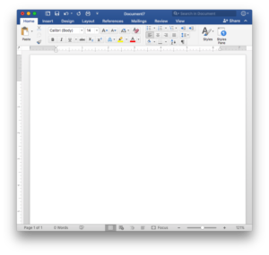

Stop Starting From Scratch When You Write
Everyone says that getting started is the hardest thing about writing. But what if you could make getting started the easiest part of all?
You can massively improve your writing – and get it done much faster – when you think of writing as the assembly of parts.
How long have you spent sharing at this?
It’s no wonder. Writing is the one of the only creative processes where you’re expected to conjure everything from scratch each time you sit down to work.
I’ve been a writer for 20 years, and it only struck me recently that maybe this should be challenged. Musicians, chefs, designers, software engineers: people who build things almost never start from scratch. They take components and glue them together, filling in the blanks as they go.

Graphic designers often use stock elements, and I think that effective writers should do the same.
Look at graphic designers, for example. If you’ve ever watched a graphic designer work, most of the backgrounds, icons and badges they use come from stock websites
An efficient designer will normally buy a funnel diagram template rather than make one from scratch. For $5, why reinvent the wheel?
Programming is another creative process where it’s considered wasteful and ignorant to start from scratch.
Coders make heavy use of software libraries, frameworks and components that other people have created. They fashion them together to create something original. If there’s already code that works, a programmer would be insane for attempting to recreate it.

Many websites use menus and icons from Bootstrap.io. When you’re writing, you should be able to make use of existing elements too.
There are so many examples of this:
- Teachers use lesson templates to put together lessons.
- Musicians assemble their tracks from sample packs and packaged drum loops.
- Even nature uses off the shelf parts: bacteria borrow segments of DNA from other organisms, just like musicians borrow riffs and melodies from other artists.
Almost any creative process that you care to name starts with something to build on, so why should writing be any different?
A few years ago, I decided to try to apply this concept to writing.
That’s why today – when I sit down to start writing – I don’t see a blank document of despair.
Instead, I see this:

This is my ‘swipe file’.
It’s a large, constantly growing text document where I paste stories, anecdotes and interesting quips I’ve collected for use in my writing.
Whenever I need an interesting way to get people’s attention or begin a piece I’m working on, I just fire up my swipe file and within a few minutes I can normally find something good.
Suddenly, writing is like going shopping.
Here’s an example. I was writing a blog post for a client on ‘digital transformation’ and all the problems that organisations have adapting to disruption. I needed a strong way to open it. So instead of chewing my pen for an hour, I scrolled through my swipe file looking for something suitable.
Within a few minutes I’d found this story about Steve Jobs that was just perfect to kick off my piece:

Having a scrap book of interesting stories and anecdotes isn’t just useful for figuring out how to begin something – it’s also great for finding ‘pick me up’ material you can sprinkle throughout your writing to give your readers a bit of relief and keep them hooked.
A few hundred words in, I felt the piece needed a spritz, so I scrolled through my swipe file and found this:
Having a scrap book of interesting stories and anecdotes isn’t just useful for figuring out how to begin something – it’s also great for finding ‘pick me up’ material you can sprinkle throughout your writing to give your readers a bit of relief and keep them hooked.
A few hundred words in, I felt the piece needed a spritz, so I scrolled through my swipe file and found this: